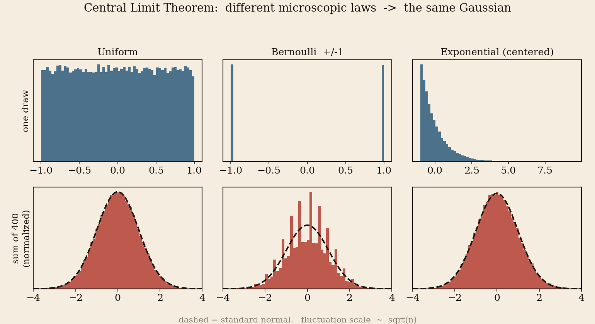
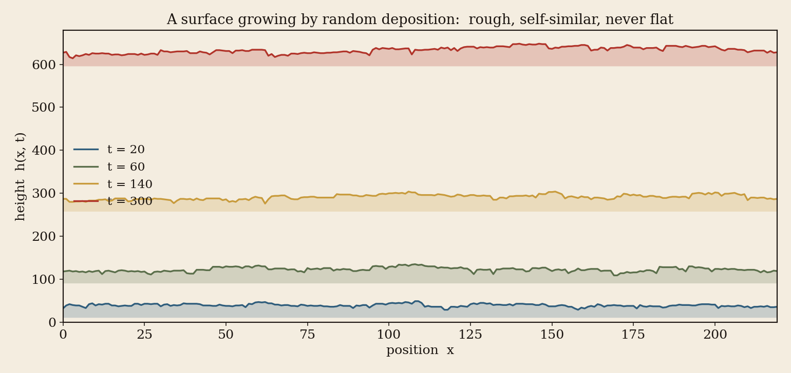
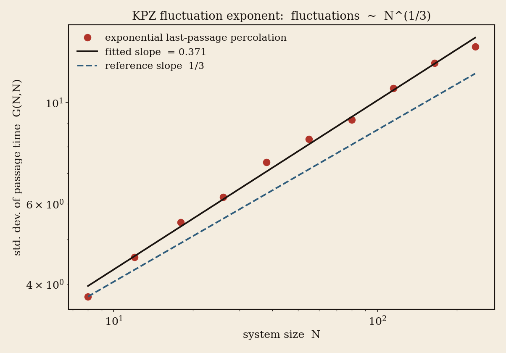
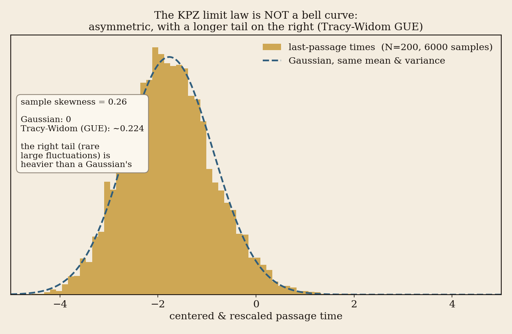

確率 ・ 普遍性 ・ 硬さ
サイコロをたくさん足すとガウス分布が出る。では「足すだけでは済まない」非線形なランダム成長では、何が出るのか。その答えがTracy–Widom分布であり、KPZ普遍性クラスだ。しかもそれは、現実の物理実験でも観測されている。
やあ。
この前ちょっと話した「ランダムな構造に現れる普遍性」の話、結局どこまで転がっていったかというと、KPZ普遍性クラスとランダム行列理論というところまで来てしまった。せっかくなので、君はもう Tracy–Widom や Baik–Rains の名を挙げ、ランダム行列まで来ている。だからゼロからは説明しない。代わりに、それらが一本の背骨でどう繋がるか ―― いちばん面白いと思っている筋道を、図と数値で並べ直す。証明は追わなくていい、構造だけ掴んでくれ。大事なのは一つの感覚 ――「細部を忘れても、何かが残る」という感覚だ。図はすべて、僕が実際に計算機で乱数を回して描いた。コードと出てきた数値も、各章のおわりに畳んで置いておくから、疑り深い君はそこを開いて確かめてくれ（弾道堆積の図2だけはコードを載せていない）。
まず、君が完全に知っている普遍性を一つ確認しておこう。独立で同じ分布に従う量（分散が有限で 0 でないもの）を足して正規化すれば、元の分布の形（サイコロでも歪んだ指数分布でも）は忘れられ、残る山の形は必ず同じ釣鐘型（ガウス分布）になる。これが中心極限定理だ。
ポイントは二つ。ひとつは 出てくる極限の形（ガウス分布）が一つに決まっていること。もうひとつは 揺らぎの大きさが √n で効くこと ―― n 個足すと、平均からのブレは典型的に n1/2 くらいのスケールになる。指数が 1/2。覚えておいてほしいのはこの「1/2」だ。あとで別の数字が出てくる。

「普遍性（universality）」とは、ミクロのルールの違いが、適切なスケールで見ると消えてしまい、少数の極限法則だけが残る現象のこと。物理でいう臨界現象の普遍性クラスと同じ思想だ。何を足すかは忘れられ、「どういう足し方の構造か」だけが行き先を決める。
三つの違う「1個の分布」から n 個を足して正規化し、出てきた山の歪度（左右の非対称さ）を測る。ガウスなら歪度はほぼ 0 になるはず。
import numpy as np from scipy import stats rng = np.random.default_rng(20260530) n, samples = 400, 60_000 # add n=400 iid copies, repeat 60k times draws = { "Uniform": lambda s: rng.uniform(-1, 1, s), "Bernoulli": lambda s: rng.choice([-1.0, 1.0], size=s), "Exp(center)": lambda s: rng.exponential(1.0, s) - 1.0, } for name, f in draws.items(): S = f((samples, n)).sum(axis=1) # the sum of n copies S = (S - S.mean()) / S.std() # normalize -> mean 0, var 1 print(name, "skew =", round(float(stats.skew(S)), 3)) # -> ~0, i.e. Gaussian
| もとの分布 | 1個の分布の形 | 和を正規化した後の歪度 |
|---|---|---|
| 一様 Uniform(−1,1) | 平ら | ≈ 0.00 |
| ベルヌーイ ±1 | 二本の棒 | ≈ 0.00 |
| 指数（中心化） | 右に大きく歪む | ≈ 0.10（理論 2/√n = 0.10） |
一様とベルヌーイ（もとが左右対称）は歪度 0。指数分布の歪度 2 は、足して正規化すると 2/√n に縮み、n = 400 ではまだ 0.10 残る（標本 6 万の標準誤差は約 0.01 なので、偶然の揺れではない）。歪みは 1/√n の速さで 0 に向かう ―― これが「ガウスへの収束」を数値で見た姿だ。
さて、中心極限定理が扱うのは「独立な量の和」だった。線形で、おとなしい。けれど世界には、足し算では書けないランダムさがたくさんある。たとえば ――
コーヒーにミルクを垂らしたときに広がるしみの縁。紙が湿って濡れていく境界線。細菌コロニーや結晶や山火事の広がる前線。雪が積もって作る不揃いな表面。これらはみなランダムにデコボコしながら成長する界面だ。高さ h(x, t) が、場所 x と時間 t の関数として、ガタガタ伸びていく。

ここで効いてくるのが、足し算には無かった非線形だ。表面の傾いたところは、傾きのぶんだけ余計に前に伸びる（斜めの方が「面積を稼げる」）。この「傾きが成長速度に効く」という効果が、和の世界とはまったく違う物理を生む。1986年、カルダー（Kardar）・パリージ（Parisi）・チャン（Zhang）の三人が、この種の成長を一本の方程式に凝縮した。頭文字をとって KPZ方程式 という：
右辺の三つは、「表面をならす拡散」「傾きに応じて伸びる非線形項」「でたらめに降りかかるノイズ」。中央の二乗の項こそが、ただの足し算を超えた KPZ の心臓部だ。
では、この育つ表面の「粗さ」はどう増えるのか。和の世界では揺らぎは t1/2 だった。ところが KPZ の世界では、高さの揺らぎは ――
つまり、待てば待つほど縦のブレは t1/3 で、横にそろう範囲は t2/3 で広がる。1/2 ではなく 1/3。中心極限定理の「√ 」より遅い。揺らぎを抑えるのは、隣どうしで高さを均す「ならす」項だ。それだけ（線形）なら揺らぎは t1/4 まで下がる（本編第 III 章の Edwards–Wilkinson）。傾きで伸びる非線形項は、それを t1/3 へ持ち上げる。KPZ の目盛りは、この二つの釣り合いで決まる。時間・空間・高さを 3 : 2 : 1 の比で同時に拡大すると、大スケールで眺めた形（統計）が変わらない ―― この比こそ KPZ クラスの背骨だ。
粗さ指数 α（空間方向のデコボコ具合、KPZでは α = 1/2）、成長指数 β（時間方向、β = 1/3）、動的指数 z（時間と空間の換算、z = 3/2）の三つには、α + z = 2 と β = α / z という二本の関係式が成り立つ。だから本質的に自由なのは一つだけ。一個決まれば、残りはドミノ倒しに決まる ―― これが「3:2:1」という比の正体だ。

格子の左上から右下まで、通った重みの和が最大になる経路を選ぶ（最後通過浸透）。その到達時間 h(x, t) の揺らぎを、(A) サイズを変えて指数を測り、(B) 形を中心化・スケールして見る。
import numpy as np from scipy import stats rng = np.random.default_rng(20260530) def last_passage(N): # exponential-weight corner growth w = rng.exponential(1.0, size=(N, N)) G = np.zeros((N, N)); G[0,0] = w[0,0] for j in range(1, N): G[0,j] = G[0,j-1] + w[0,j] for i in range(1, N): G[i,0] = G[i-1,0] + w[i,0] for i in range(1, N): for j in range(1, N): G[i,j] = max(G[i-1,j], G[i,j-1]) + w[i,j] return G[N-1, N-1] # best (longest) path corner-to-corner # (A) fluctuation exponent: std of G(N,N) vs N -> slope ~ 1/3 for N in [8,12,18,26,38,55,80,115,165,235]: s = np.std([last_passage(N) for _ in range(1500)]) print(N, round(s,3)) # log-log slope of these 10 points -> 0.378 # (B) limit law: center & scale, then look at the shape N, samples = 200, 6000 vals = np.array([last_passage(N) for _ in range(samples)]) scaled = (vals - 4*N) / (2**(4/3) * N**(1/3)) # KPZ centering/scaling print("mean(vals) =", vals.mean(), " (4N =", 4*N, ")") # 773.9 = 4N + 2^(4/3) N^(1/3) * (-1.771) print("skewness =", round(float(stats.skew(scaled)), 3)) # -> 0.286 here (Tracy-Widom GUE ~0.224)
| N | 8 | 18 | 38 | 80 | 165 | 235 |
|---|---|---|---|---|---|---|
| std. dev. | 3.91 | 5.44 | 7.09 | 9.35 | 12.39 | 14.30 |
| 測った量 | 実測（有限サイズ） | 理論の漸近値 |
|---|---|---|
| 揺らぎ指数（log-log の傾き、10 点） | 0.378 | 1/3 = 0.333… |
| 平均 mean G(N,N)（N=200） | 773.9 | 4N + 24/3N1/3×(−1.771) = 773.9 |
| 歪度 skewness（N=200） | 0.286 | 0.224 (TW–GUE) |
指数と歪度は、有限の N では理論の漸近値から少しずれ、N を大きくするほど右の列へ寄っていくはずの量だ（歪度には標本 6000 のばらつきも標準誤差で約 0.03 ある）。平均は事情が違う。4N = 800 からの差 −26 は有限サイズのずれではなく、Tracy–Widom 分布の平均 −1.771 にスケール 24/3N1/3 を掛けたもので、右の列の式と小数第1位まで合う。この差は N1/3 で広がる（N=2000 で −56、N=20000 で −121）。4N に近づくのは比 G/4N だけだ。これが「細部を忘れて Tracy–Widom が残る」過程を数値で覗いた姿だ。
表の数値は、上のコードを種 20260530 のまま走らせた出力（Python 3.12・numpy 2.5.1・scipy 1.18.0）。図3・図4 は別の実行で描いた図で、描き直していないため、図の中の数字（傾き 0.371・歪度 0.26）は表と少しずれる。
さて、ここからが本当に美しいところだ。中心極限定理では、行き先の形はガウス分布という一つの曲線だった。KPZ の世界でも、細部を忘れた先に少数の決まった極限分布が現れる。ただしそれは釣鐘型ではない。左右非対称で、片側の裾が重い、見慣れない曲線 ―― それが Tracy–Widom分布 だ。

面白いのは、出てくる極限分布が初期条件で変わること。同じ KPZ クラスの中に、いくつかの「サブ普遍性」がある：
・曲がった初期形（水滴が広がるように成長）からは Tracy–Widom GUE（記号 F2）。これはランダム行列の複素版（GUE、対称性指数 β = 2）の最大固有値の分布。
・平らな初期形からは Tracy–Widom GOE（F1）。ランダム行列の実対称版（GOE、β = 1）に対応。
・定常状態（最初から平衡なノイズ）からは Baik–Rains分布（F0）。
君が名前を挙げてくれた Tracy–Widom も Baik–Rains も、ここにきちんと住んでいる。そして決定的なのは、このうち曲がった初期形と平らな初期形の二つ（F2・F1）が、ランダム行列の最大固有値の揺らぎと同じ分布だということ ―― ここで二つの世界が握手する（Baik–Rains の F0 は、GUE・GOE のような古典的なランダム行列の最大固有値の分布ではない）。
大きなランダム行列の固有値は、互いに反発し合いながら一本の線の上にきれいに並ぶ。そのいちばん端の固有値がどこまで飛び出すかを測ると、揺らぎは（固有値どうしの平均の間隔が 1 ほどになる目盛りで測れば）やはり（行列サイズ）1/3 でスケールし、分布は Tracy–Widom になる（指数は目盛りの取り方で変わる。成分の分散を 1 にそろえた標準の GUE なら、端の揺らぎは（行列サイズ）−1/6）。育つ表面の先端と、ランダム行列の最大固有値が、まったく同じ数式で揺れている ―― これが「KPZ とランダム行列理論に到達した」と君が言った地点の正体だ。
ここまでぜんぶ数学とシミュレーションの話だった。でも、本当に驚くのはここからだ。2010年、竹内一将と佐野雅己は、現実の物理実験で Tracy–Widom 分布を観測した。
使ったのは液晶の乱流。電場をかけて液晶を乱流状態（DSM1）にしておき、そこへレーザーパルスで別の乱流相（DSM2）の種を一点だけ植え込む。すると DSM2 の領域が、まさに「ランダムにデコボコ育つ界面」として広がっていく。これをカメラで撮り続け、界面の高さの揺らぎを測った。
結果は理論の予言そのものだった。一点から円く広がらせれば Tracy–Widom GUE（2010年）。翌2011年には、笹本智弘・シュポーンを加えた四人の論文で、線から平らに広がらせれば Tracy–Widom GOE になることも確かめられた ―― 初期条件で分布が変わるという、あの「サブ普遍性」までもが、実験室の液晶のなかで再現された。しかも一致は、確率密度にして十万分の一（10−5）ほどの稀な裾の領域まで確かめられている（2011年の論文の言葉）。
この実験のあと、KPZ方程式そのものの厳密解（笹本・シュポーン、アミール・コーウィン・クアステルら）も相次いで得られ、理論と実験と厳密数学が同じ一点で握手した。君が追っていた「普遍性」は、黒板の中だけの抽象ではなく、自然がほんとうに従っている法則だったわけだ。
ここで君の直感に話を寄せたい。君は「究極的には可積分系や表現論みたいな代数的な話題の影として帰着されるのでは」と言った。これは ―― 少なくとも今わかっている範囲では ―― かなり正しい。
KPZ クラスの中で「Tracy–Widom が出る」と厳密に証明できたモデルたちは、偶然ではなく、ほぼ例外なく可積分構造（exactly solvable structure）を隠し持っている。具体的には、ロビンソン–シェンステッド–クヌース（RSK）対応、シューア多項式やマクドナルド多項式、量子可積分系のベーテ仮説、行列式・パフィアン点過程といった、表現論と代数的組合せ論の道具立てだ。たとえば非対称単純排他過程（ASEP）や最後通過浸透が解けるのは、その背後に量子群やシューア測度の構造があるから。Tracy–Widom 分布そのものが、パンルヴェ II 方程式（ある可積分な非線形常微分方程式）の解で書ける、という事実もこの系譜にある。
つまり、こういう絵を描ける。ミクロのランダムさは、たしかにデタラメだ。けれど、そのデタラメを束ねる「束ね方」の中に、表現論的・可積分的な硬い骨組みがひそんでいる。大スケールで眺めると、ランダムさの肉は溶けて消え、骨組みだけが Tracy–Widom や Baik–Rains という決まった形で浮かび上がる。普遍的な極限分布とは、代数的構造が確率の海面に落とす影 ―― 君の言い回しを借りれば、まさにそういうことだと思う。ただし線を一つ引いておく。可積分性は、個々の模型から厳密な公式を引き出す証明の道具で、Tracy–Widom にたどり着くための必要条件ではない。解ける模型と比べるやり方で、可積分でない模型を同じ極限へ導いた仕事もある(本編第IX章)。硬い代数の形がはっきり見えているのは、個々の模型よりも極限の側 ── パンルヴェ II で書ける Tracy–Widom 分布そのもの ── だ。
君も知っての通り、僕はもともと「中心極限定理って、小平消滅定理の親戚なんじゃないか」という妄想を転がしていた。ミクロな歪みが大量に重なった先で消えて（vanish して）、硬い対象だけが残る ―― という構図が、両者で似て見えるからだ。これは厳密な数学的同値ではない、あくまで僕の比喩だと最初に断っておく。
ただ、まったくの空想でもない気がしている。たとえば ボホナー（Bochner） という人を思い出してほしい。確率論で「特性関数」を特徴づけるボホナーの定理 ―― 正定値関数とフーリエ変換の話 ―― はまさに確率の基礎だ。ところが同じボホナーは、複素幾何でボホナー技法による消滅定理を作った人でもある。これは後の小平消滅定理の直接の先祖だ。確率の特性関数と複素幾何の消滅が、一人の人間の中で同居している。この符合が、僕には偶然に思えない。
そして今回 KPZ にたどり着いて、ようやく腑に落ちた気がする。「大量のランダムを束ねると、ミクロな歪みが消えて、何かしらの普遍的で硬い分布が残る」 ―― その残った硬さの正体が、可積分系や表現論という代数の骨組みだとすれば。それは確率の世界に落ちた代数的構造の影であり、僕がずっと「消滅の仲間」と呼びたかったものの、もう少し正確な顔なのだと思う。中心極限定理も、KPZ も、ランダム行列も、同じ家系の別の肖像画だ。
公平のために線を引いておく。確立した事実は、(1) KPZ クラスでの 1/3・2/3 スケーリングと Tracy–Widom/Baik–Rains の出現、(2) そのうち Tracy–Widom（F2・F1）がランダム行列の最大固有値の分布と一致すること、(3) 液晶実験での観測、(4) 厳密に解けたモデルの背後に可積分・表現論的構造があること。一方、僕の個人的アナロジーは、これらを「消滅定理（Bochner–Kodaira）の親戚」と眺める見方の方だ。前者を裏付けに後者を主張しているわけではない ―― 後者はあくまで、研究の地図を描くための私的な羅針盤だと思ってほしい。
最後に、いま研究の前線で何が起きているかを少しだけ。かつては「個々のモデルで Tracy–Widom が出る」ことを一つずつ示していた。ところが2010年代後半から、クラス全体の極限と目される普遍的な対象そのものが数学的に構成されるようになった。
マテツキ・クアステル・レメニク（2021）が構成した KPZ固定点（KPZ fixed point） は、3 : 2 : 1 スケーリングの下でこのクラスのモデルが収束していく先と目される、普遍的なランダム過程だ（収束が証明されたのは TASEP をはじめとする一部のモデルで、クラス全体はまだ予想の段階）。続いてダヴェルニュ・オルトマン・ヴィラーグ（2022）の directed landscape は、（上へは高々一次でしか伸びない）あらゆる初期条件からの KPZ固定点を一枚に束ねた、いわば「ランダムな時空の地形そのもの」。さらに近年は stationary horizon といった対象も整理され、これら極限対象どうしの関係を特徴づける仕事が進んでいる。
注目すべきは、その動機づけだ。普遍性クラスへの所属は、ざっくり (1) 局所的な動き、(2) ならす機構、(3) 傾きに依存する成長、(4) 相関がすぐ減衰する時空ノイズ の四条件で特徴づけられる、と整理されている。和の世界の「独立・有限分散」に対応する、非線形版の十分条件を探す試みだ。そして研究の合言葉のひとつは、まさに 離散モデルの可積分構造を、極限対象の側へ持ち上げること ―― 君が言った「代数の影」を、影のままでなく構造として捕まえにいく営みだと言っていい。
というわけで、君が「ランダムな普遍性」を追って KPZ にたどり着いたのは、地図の上ではとても良い場所だ。中心極限定理という誰もが知る入口から始めて、足し算では済まない非線形の成長へ進むと、1/3 という新しい目盛りと、Tracy–Widom という新しい硬い分布が待っている。その硬さは液晶の実験でも現れ、裏にはランダム行列が、さらにその裏には可積分系と表現論という代数の骨組みが透けて見える。
細部は忘れられる。けれど、忘れられたあとに残るものこそが、いちばん深い構造を映している。 ―― 続きはまた話そう。
∎
序章の手紙で素描した筋道を、定義・定理・証明スケッチの水準で組み直す。年代・帰属・書誌は 2026-06-01 に web 照合済み。確立した定理と私見・予想は最後まで区別して書く。
必要なのは 微積分と、少しの確率・線形代数(平均と分散、行列の固有値)くらい。測度論や関数解析は要らない。難所(Fredholm 行列式・Painlevé・表現論)は飛ばしても筋は通るように書いた ── そこは「そういう硬い道具があるんだな」とだけ受け取って、図と「手を動かす」折りたたみと太字の要点を追えばいい。
物語は一行で言える:サイコロを足すと釣鐘型(ガウス)。では“足すだけでは済まない”成長だと? 別の曲線 ── Tracy–Widom ── が現れ、しかもそれがランダム行列の最大固有値とも、現実の実験とも一致する。これを、なるべく低い足場から積み上げる。学部の自主ゼミで後輩に話すくらいの気楽さで、止まらず読み進めてくれ。
同じ文字が二役を演じる箇所が二つある ── 先に潰しておく。\(\beta\):成長指数 \(\beta=\tfrac13\)(第III章)と、ランダム行列の対称性 Dyson 指数 \(\beta=1,2,4\)(第V章)は無関係。\(\lambda\):KPZ 方程式の非線形係数(第II章)と、ヤング図(分割)\(\lambda\)(第IV章)も別物。いずれも文脈で必ず区別される。
| 記号 | 意味 | 初出 |
|---|---|---|
| \(h(x,t)\) | 界面の高さ | II |
| \(\alpha,\ z,\ \beta\) | 粗さ / 動的 / 成長 指数(1+1次元で \(\tfrac12,\tfrac32,\tfrac13\)) | III |
| \(1{:}2{:}3\) | 大スケールの極限(KPZ 固定点)が \(t\mapsto b^3t,\ x\mapsto b^2x,\ h\mapsto b\,h\) で統計不変 | III |
| \(\nu,\ \lambda,\ D\) | KPZ 係数:拡散・非線形・ノイズ強度 | II |
| \(\xi\) | 時空ホワイトノイズ | II |
| \(Z=e^{(\lambda/2\nu)h}\) | Cole–Hopf 変数 \(=\) SHE の解 \(=\) 有向高分子の分配関数 | II |
| \(G(m,n)\) | 最後通過時間(LPP) | IV |
| \(\lambda,\ \lambda_1,\ s_\lambda\) | 分割(ヤング図)・その第1行・Schur 関数 | IV |
| \(\rho_k,\ K(x,y)\) | \(k\) 点相関関数・相関核 | IV |
| \(\det(I-K)\) | Fredholm 行列式(隙間確率) | IV |
| \(K_{\mathrm{Ai}},\ \mathrm{Ai}\) | Airy 核・Airy 関数 | V |
| \(F_2,\ F_1,\ F_0\) | Tracy–Widom(GUE)・(GOE)・Baik–Rains | V,VI |
| \(q(s)\) | Painlevé II の Hastings–McLeod 解 | V |
| \(\mathrm{Airy}_2,\ \mathrm{Airy}_1\) | 空間方向の極限過程 | VII |
| \(\mathcal L\) | directed landscape(ランダムな時空地形) | VII |
序章で「細部を忘れても何かが残る」と言った。まずその原型である中心極限定理を、普遍性クラスという言葉が意味をもつ形に組み直す。KPZ は、この構図の非線形版として現れる。
「普遍性クラス」は難しく考えなくていい。細かいルールが違っても、たくさん重ねて遠くから眺めると同じ形に化けるという仲間分けのことだ。サイコロを足すと釣鐘型になる ── あれが第一の例。下の定義と定理は、その「化け方」をきちんと言葉にしただけ。式が重ければ太字と図だけ追えばいい。
もっとも古典的な例が「和」の世界だ。独立同分布な \(X_1,X_2,\dots\) が平均 \(\mu\)、分散 \(0\lt\sigma^2\lt\infty\) をもつとき、
出発点の分布（一様・コイン・歪んだ指数…）が何であれ、行き先は標準正規分布ただ一つ。これが普遍性の最初の顔だ。揺らぎの目盛りは \(\sqrt n\)、すなわち指数 \(1/2\)。この「1/2」を覚えておいてほしい ── あとで \(1/3\) に置き換わる。
Lindeberg 条件の意味は、「各項の、大きな値をとる部分は、全体の分散にほとんど効かない」ということだ。これは「どの一項も全体の分散を一人占めしない（個々の寄与が一様に微小）」より真に強い。一様に微小なだけでは正規分布に行くとは限らない ── 確率 \(1/n\) で 1 になるベルヌーイを \(n\) 個足すと、どの一項の分散も全体の \(1/n\) にすぎないのに、中心化した和は正規分布ではなく Poisson 分布（から 1 を引いたもの）に行く。一様微小のもとでは、Lindeberg 条件と正規分布への収束は同値になる（Lindeberg–Feller）。独立性と、この条件さえあれば、分布の細部は消える。構造が極限を決め、細部は決めない ── 普遍性とはそういう主張だ、という読み方がここで立つ。
次章から、その非線形の世界の最小モデルを書き下す。
1986年、Kardar・Parisi・Zhang は、ランダムに育つ界面の高さ \(h(x,t)\) を、たった三つの効果の和として書いた。
心臓部は第二項だ。界面が法線方向に一定速度で進むとすると、高さの増加率は \(\sqrt{1+(\partial_x h)^2}\approx 1+\tfrac12(\partial_x h)^2\) となり、定数を除いて \((\partial_x h)^2\) が残る。「傾いている所ほど余計に前へ出る」 ── この非線形が、和の世界には無かったすべてを生む。\(\lambda=0\) なら線形な Edwards–Wilkinson 方程式となり、揺らぎはガウス的で別クラスに落ちる。
KPZ 方程式は単独ではない。傾き \(u=\partial_x h\) を見ると、\(u\) は確率 Burgers 方程式 \(\partial_t u=\nu\,\partial_x^2 u+\lambda\,u\,\partial_x u+\sqrt D\,\partial_x\xi\) に従う。さらに \(\nu\gt0,\ \lambda\ne0\) のとき、Cole–Hopf 変換 \[ Z(x,t)=\exp\!\Big(\tfrac{\lambda}{2\nu}\,h(x,t)\Big) \] を施すと、\(Z\) は乗法的ノイズをもつ確率熱方程式（SHE） \[ \partial_t Z=\nu\,\partial_x^2 Z+\tfrac{\lambda}{2\nu}\sqrt D\;Z\,\xi \] を満たす。\(Z\) はランダム媒質中の有向高分子の分配関数でもあり、\(h=\tfrac{2\nu}{\lambda}\log Z\)(\(\lambda=0\) では \(Z\equiv1\) となって \(h\) が戻らず、この変換は使えない。そのときの方程式は線形な Edwards–Wilkinson 方程式で、変換を通さずに直接解ける)。SHE は線形なので扱いやすく、後章の可解性の供給源になる。
なぜ \(Z=e^{ch}\)(\(c=\tfrac{\lambda}{2\nu}\))が非線形項を消して線形 SHE を出すのか。連鎖律だけで確かめる。
まず \(\partial_t Z=cZ\,\partial_t h\)。空間側は \(\partial_x Z=cZ\,\partial_x h\)、もう一度微分して \[ \partial_x^2 Z=c^2Z\,(\partial_x h)^2+cZ\,\partial_x^2 h. \] これを \(\partial_x^2 h\) について解き、KPZ の右辺を \(\partial_t Z=cZ\big(\nu\,\partial_x^2 h+\tfrac\lambda2(\partial_x h)^2+\sqrt D\,\xi\big)\) に代入する。
\((\partial_x h)^2\) の係数だけ集めると \[ -\,\nu c^2+c\cdot\tfrac{\lambda}{2}=-\frac{\lambda^2}{4\nu}+\frac{\lambda^2}{4\nu}=0 \] (\(c=\tfrac{\lambda}{2\nu}\) を代入した)。非線形項がちょうど打ち消し合う。残るのは \[ \partial_t Z=\nu\,\partial_x^2 Z+\tfrac{\lambda}{2\nu}\sqrt D\;Z\,\xi, \] 本文の SHE そのものだ。「傾きで伸びる」非線形は、指数変数 \(Z\) から見ると線形な拡散 + 乗法ノイズに化けていた。
※ これは形式計算。係数 \(c\) は上の連鎖律だけで決まる。\(Z\xi\) は乗法的ノイズで、正則化したノイズで伊藤の公式を使うと発散する定数の項が余分に出るが、それは後述の繰り込み定数 \(C_\epsilon\) に吸収される(伊藤の SHE の解の対数が、繰り込んだ KPZ の解になる)。打ち消しの仕組み自体はこの連鎖律が正しく捉えている。
Hairer の正則構造の理論は、粗い解を「方程式が指定する記号の基底」で局所展開し、その展開に現れる発散項（ここでは \((\partial_x h)^2\) の対角発散）を有限個だけ系統的に差し引く。引く量 \(C_\epsilon\) は正則化スケール \(\epsilon\) とともに発散するが、引いたあとに残る対象は正則化の取り方に依らず一意に決まる。これは確率版の「くりこみ」であり、Hairer はこの一般論で 2014年フィールズ賞を受けた（同年：Avila, Bhargava, Mirzakhani）。ほぼ同時期に Gubinelli–Imkeller–Perkowski のパラ制御分布による別アプローチも現れ、特異確率偏微分方程式という分野を開いた。なお Cole–Hopf 経由で SHE を解とみなす定式化は、それ以前に Bertini–Giacomin（1997）が弱非対称排他過程の極限として厳密化していた。
こうして「育つ表面の最小モデル」が手に入った。次章では、このモデルが選ぶ揺らぎの目盛り ── あの \(1/3\) ── がなぜ動かせないのかを見る。
序章の合言葉「高さ \(t^{1/3}\)、横幅 \(t^{2/3}\)」は当てずっぽうではない。対称性が指数を縛る。それを見る。
界面の粗さは、幅(高さの標準偏差)\(w(L,t)\) で測る。系のサイズ \(L\)、時刻 \(t\) に対し、KPZ クラスでは Family–Vicsek の動的スケーリング
が成り立つ。ここで \(g(u)\sim u^{\beta}\ (u\ll1)\)、\(g(u)\to\text{const}\ (u\gg1)\)。飽和前は \(w\sim t^{\beta}\)(成長指数)、飽和後は \(w\sim L^{\alpha}\)(粗さ指数)、両者をつなぐ時間が \(\sim L^{z}\)(動的指数)。整合性から \(\beta=\alpha/z\)。
(1) Galilei 不変性 → \(\alpha+z=2\). KPZ 方程式は、傾いた座標系への乗り換えで形を変えない ── \(h(x,t)\) が解なら \(h(x+\lambda vt,\,t)+vx+\tfrac{\lambda}{2}v^2t\) も(ノイズを同じく平行移動したものについての)解だ(高さに足す \(\tfrac{\lambda}{2}v^2t\) の項が要る。非線形項 \(\tfrac\lambda2(\partial_xh)^2\) がこの対称性を生む)。この統計的チルト対称性のため、結合定数 \(\lambda\) はくりこみで変化せず、その帰結として、非線形項が大スケールでも消えずに効く固定点では、スケーリング指数は任意の次元で \(\alpha+z=2\) を満たす(空間 3 次元以上の弱結合相のように、非線形項が大スケールで実効的に消える場合は Edwards–Wilkinson 型の \(z=2\) になり、この関係は成り立たない。1+1 次元では \(\lambda\ne0\) ならいつも前者で、以下の導出はこちら)。
(2) 1+1次元の定常測度 → \(\alpha=1/2\). 空間1次元では、KPZ の定常状態で界面の傾きがホワイトノイズ(高さはブラウン運動)になることが分かっている。ゆえに空間相関は拡散的で、粗さ指数は \(\alpha=\tfrac12\) にちょうど固定される。
時間・空間・高さを \[ t\mapsto b^{3}t,\quad x\mapsto b^{2}x,\quad h\mapsto b^{1}h \] と拡大しても、大スケールの極限(第VII章の KPZ 固定点)の統計は変わらない ── これが1:2:3 スケーリングの正体で、KPZ クラスの背骨だ(高さ:空間:時間 \(=1:2:3\))。KPZ 方程式そのものはこの拡大で不変ではない:\(h_b(x,t)=b^{-1}h(b^2x,b^3t)\) は係数が \(\nu\to\nu/b,\ \lambda\to\lambda,\ \sqrt D\to\sqrt D\,b^{-1/2}\) に変わった KPZ 方程式に従う。個々の模型も方程式も、大スケールでこの不変な極限へ近づいていく。
紙と鉛筆だけで \(1/3\) を出す。前提は二つ:(i) Galilei 不変性 \(\alpha+z=2\)、(ii) 1+1次元の定常性 \(\alpha=\tfrac12\)。
(ii) を (i) に入れて \(z=2-\alpha=\tfrac32\)。成長指数は定義から \(\beta=\dfrac{\alpha}{z}=\dfrac{1/2}{3/2}=\dfrac13\)。ゆえに飽和前は \(w\sim t^{1/3}\)、相関の届く距離は \(\sim t^{1/z}=t^{2/3}\)。
整合チェック. 飽和時刻 \(t^{*}\sim L^{z}=L^{3/2}\) を成長則に入れると \(w\sim (t^{*})^{\beta}=L^{(3/2)\cdot(1/3)}=L^{1/2}=L^{\alpha}\)。確かに飽和値 \(L^{\alpha}\) と一致する。指数は独立ではなく、一つ決まればドミノで決まる。
※ ここは手計算のみ。序章の数値実験ノート①②の表の数値は、そこに載せたコードを種 20260530 のまま走らせた出力(Python 3.12・numpy 2.5.1・scipy 1.18.0)。図3・図4 は別の実行で描いた図で、図の中の数字は表と少しずれる。弾道堆積(図2)のコードは載せていない。
なぜ特定のモデルだけ「厳密に \(t^{1/3}\) と Tracy–Widom が出る」と証明できるのか。偶然ではない。背後に可積分(代数)構造が隠れているからだ。
同じ対象が三つの顔をもつ。格子点に独立な重み \(w_{ij}\ge0\) を置き、左下 \((1,1)\) から右上 \((m,n)\) へ右・上だけで進む経路 \(\pi\) の重み和を最大化する: \[ G(m,n)=\max_{\pi:(1,1)\to(m,n)}\ \sum_{(i,j)\in\pi}w_{ij}. \] これが最後通過浸透(LPP)。\(G\) は漸化式 \(G(m,n)=\max\{G(m-1,n),\,G(m,n-1)\}+w_{mn}\) に従い、これは界面の角成長そのもの。さらに重みが平均 1 の指数分布なら、粒子描像では連続時間の TASEP(粒子が右へ一方向に跳ぶ排他過程)に等価だ(幾何分布の重みなら、箱を積む時刻を \(G(m,n)+m+n-1\) と数え直して離散時間の TASEP になる。一般の分布の重みでは待ち時間に記憶が残るので、こうした TASEP にはならない)。
序章の数値ノート②で計算機が出した値(\(N=200\) で平均 773.9・歪度 0.286)は、この定理の有限 \(N\) での姿だ。ただし平均は \(4N\) に近づくのではない。定理から見込まれる平均は \(4N+2^{4/3}N^{1/3}\,\mathbb E[\chi_2]\)(\(\chi_2\) は \(F_2\) に従う確率変数で \(\mathbb E[\chi_2]\approx-1.771\))で、\(N=200\) なら 773.9 ── 実測と小数第1位まで合う。\(4N\) からのずれは \(N^{1/3}\) で育ち、1 に近づくのは比 \(G(N,N)/4N\) だけだ。歪度は \(N\to\infty\) で \(F_2\) の 0.224 へ向かうはずの量(標本 6000 のばらつきは標準誤差で約 0.03)。
なぜ一部のモデルだけ「厳密に」解けるのか? ── 裏に数えられる代数の骨組み(ヤング図と対称関数)が隠れているから。次の RSK は、その骨組みを一度だけ手でのぞく実演だ。記号は増えるが、「並びかえ → 箱の図 → いちばん上の行の長さ」という流れだけ掴めば十分。難しければ幕間の図D(ヤング図)を見れば腑に落ちる。
RSK 対応(Robinson–Schensted–Knuth)は、非負整数行列を一対の半標準ヤング盤 \((P,Q)\) に全単射で写す。鍵は、重みが非負の整数(たとえば幾何分布)のとき、重みの行列 \((w_{ij})\) を RSK で写して得られる形(分割)\(\lambda\) の第1行 \(\lambda_1\) が、ちょうど最後通過時間 \(G(m,n)\)(= 最長増加部分列の長さ)に等しいこと(上の Johansson の定理の指数分布の重みは、幾何分布の重みの極限として扱う)。これで確率の問題が、ランダムな分割 \(\lambda\) のいちばん上の行の問題に翻訳される。
重みが独立な幾何分布で、そのパラメータが行と列の積に分かれる(\(\mathbb P(w_{ij}=k)=(1-x_iy_j)(x_iy_j)^k\))とき、その分割の分布は Schur 測度(Okounkov 2001) \[ \mathbb P(\lambda)\ \propto\ s_\lambda(x)\,s_\lambda(y) \] の形(\(s_\lambda\) は Schur 関数)になり、行の長さを一段ずつずらした点の集まり \(\{\lambda_i-i\}\) が行列式点過程をなす。
行列式点過程では、最大の点が値 \(s\) を超えない確率が Fredholm 行列式(無限次元に拡張した行列式)\(\det(I-K)_{L^2(s,\infty)}\) で書ける。スケール極限で核 \(K\) がAiry 核に(座標を合わせたうえで \(L^2(s,\infty)\) 上のトレースノルムで。各点で収束するだけでは足りない)収束すれば、この確率は Tracy–Widom \(F_2\) になる(次章)。これが「可積分構造 → 行列式 → Tracy–Widom」という背骨だ。
いま天下りに置いた「隙間確率 \(=\) Fredholm 行列式」を、一段だけ手で確かめる。要点は二つ ──《行列式は点の反発を符号化する》《「一点もない確率」は包除原理で行列式の級数になる》。式が重ければ、結論「最大点 \(\le s\) \(\Leftrightarrow\) 区間 \((s,\infty)\) が空 \(\Leftrightarrow\) \(\det(I-K)_{(s,\infty)}\)」だけ持って次章へ進んでよい。
① 行列式 \(=\) 反発(手で一目). 定義の \(k=2\) を書き下すと、二点を同時に見出す密度は \[ \rho_2(x,y)=\det\!\begin{pmatrix}K(x,x)&K(x,y)\\K(y,x)&K(y,y)\end{pmatrix}=K(x,x)\,K(y,y)-K(x,y)\,K(y,x) . \] 以下、核が Hermite(\(K(y,x)=\overline{K(x,y)}\))の場合で読む。このとき最後の項は \(|K(x,y)|^2\) になる(Airy 核は実対称なのでこの形。対称でない核では \(K(x,y)K(y,x)\) のまま)。もし二点が独立なら \(\rho_2=\rho_1(x)\,\rho_1(y)=K(x,x)K(y,y)\) のはず。ところが \(|K(x,y)|^2\) だけ差し引かれる。たとえば \(K(x,x)=K(y,y)=0.5,\ K(x,y)=0.3\) なら \(\rho_2=0.25-0.09=0.16\lt 0.25\) ── 二点は互いを避ける。オフ対角成分 \(K(x,y)\) が反発の強さそのものだ。固有値が重ならないのも、界面の先端がのっぺり揃わないのも、この同じ符号から来ている。
② 「一点もない確率」\(=\) 包除 \(=\) Fredholm 行列式. 区間 \(B\) に点が一つもない確率を、相関関数で展開する(包除原理): \[ \mathbb P\big(B\text{ に点なし}\big)=\sum_{n\ge0}\frac{(-1)^n}{n!}\int_{B^n}\rho_n(x_1,\dots,x_n)\,dx=\sum_{n\ge0}\frac{(-1)^n}{n!}\int_{B^n}\det\big[K(x_i,x_j)\big]_{1\le i,j\le n}\,dx. \] 右辺はまさに核 \(K\) の Fredholm 行列式 \(\det(I-K)_{L^2(B)}\) の定義級数だ。最初の数項を読むと意味が透ける: \[ 1-\underbrace{\int_B K(x,x)\,dx}_{\text{期待点数}}+\frac{1}{2}\!\int_{B^2}\!\big(K(x,x)K(y,y)-|K(x,y)|^2\big)\,dx\,dy-\cdots \] 「\(1-(\)期待点数\()+(\)ペアの補正\()-\cdots\)」── 素朴な包除そのものだ。第 \(n\) 項の被積分関数が \(n\times n\) 行列式なのは、①で見た反発がそのまま入れ子になっているからにすぎない。
あとは \(B=(s,\infty)\) と取るだけ。最大点が \(s\) を超えない \(\Leftrightarrow\) 区間 \((s,\infty)\) に点がない なので \[ \mathbb P(\text{最大点}\le s)=\det(I-K)_{L^2(s,\infty)} . \] 行頭で天下りに置いた式が、反発(①)と包除(②)から出た。核 \(K\) がスケール極限で(トレースノルムで)Airy 核に化ければ、この右辺がそのまま次章の \(F_2(s)\) になる。
ここが全体の心臓だ。手紙が約束した奇跡 ── 育つ表面の先端と、行列の最大固有値が同じ \(F_2\) で揺れる ── を、主張ではなく手でつなぐ。
第IV章の RSK 対応を、最小の例で実演する。並び \(\sigma=(3,1,2)\) を左から Schensted 行挿入していく:
できたヤング図の形は \(\lambda=(2,1)\)。その第1行の長さ \(\lambda_1=2\) は、\(\sigma=(3,1,2)\) の最長増加部分列 \(\{1,2\}\) の長さ \(2\) にちょうど等しい(Schensted の定理)。LPP では、この \(\lambda_1\) が最後通過時間そのものだ。「最大化された経路の長さ」が「ランダムな図形のいちばん上の行」に化けた。
ここで Schur 測度(第IV章)が効く。ランダムな図形の行の長さ \(\lambda_1\ge\lambda_2\ge\cdots\) を一段ずつずらした点 \(\lambda_i-i\)(こちらは狭義に減る)は、ちょうど互いに反発し合う粒子(行列式点過程)として振る舞う ── これはランダム行列の固有値とまったく同じ構造だ。固有値は log ガスとして反発しながら半円則に詰まり、いちばん上(最大固有値)だけが端からわずかに飛び出す。飛び出す量は、外へ押す反発と内へ戻す閉じ込めの釣り合いで決まり、その揺らぎの目盛りが(\(N\times N\) 行列で、固有値の平均の間隔が 1 ほどになる目盛りで測ると)\(N^{1/3}\) になる。\(\lambda_1\)(= 最後通過時間。ここでの \(N\) は格子の大きさ)も同じ理屈で \(N^{1/3}\) で揺れ、同じ端の法則 ── Tracy–Widom \(F_2\) ── に従う。
これが「成長 → 行列式点過程 → 端 → Airy 核 → \(F_2\)」という橋の実体だ。厳密には「端の相関核が Airy 核に収束する」ことを示すのが仕事で、次章でその Airy 核と \(F_2\) を関数のレベルに書き下す。
行き先の「硬い分布」の正体を、関数のレベルで書き下す。これはランダム行列のいちばん端の固有値の分布でもある。
ガウスが「誰もが知る一つの山」なら、Tracy–Widom はもう一つの普遍的な山 ── ランダム行列のいちばん端の固有値がつくる形だ。下に Fredholm 行列式や Painlevé II という硬い道具が出てくるが、要点は《この曲線は閉じた式で書ける剛い対象で、左右非対称》ということ。式は飛ばし、図Eと数値(平均 \(\approx-1.77\)、歪度 \(\approx0.224\))だけ持って進んでよい。
GUE(ガウス・ユニタリ集団)は、複素エルミート行列にガウス測度を入れたもの。その固有値は互いに反発しながら半円則に従って並ぶが、端(最大固有値)を拡大すると、相関核は普遍的な Airy 核 \[ K_{\mathrm{Ai}}(x,y)=\frac{\mathrm{Ai}(x)\,\mathrm{Ai}'(y)-\mathrm{Ai}'(x)\,\mathrm{Ai}(y)}{x-y} \] に収束する(\(\mathrm{Ai}\) は Airy 関数)。端の揺らぎの目盛りは、行列の正規化の仕方で変わる。成分の分散を 1 にそろえた標準の GUE(\(N\times N\)、\(\mathbb E|H_{ij}|^2=1\))では、最大固有値は \(2\sqrt N\) のまわりを \(N^{-1/6}\) の幅で揺らぐ。行列全体を \(\sqrt N\) 倍し、固有値どうしの平均の間隔が 1 ほどになる目盛り(成分の分散が \(N\))で測れば、端は \(2N\) にあり、揺らぎは行列サイズの \(1/3\) 乗でスケールする。
釣鐘型ではない。左右非対称で、両裾の減衰がまるで違う: \[ F_2(s)\sim \frac{\tau_2}{|s|^{1/8}}\exp\!\big(-\tfrac{1}{12}\,|s|^{3}\big)\ (s\to-\infty),\qquad 1-F_2(s)\sim \frac{1}{16\pi\,s^{3/2}}\exp\!\big(-\tfrac{4}{3}\,s^{3/2}\big)\ (s\to+\infty). \] ここで \(\sim\) は比が 1 に近づくこと、\(\tau_2=2^{1/24}e^{\zeta'(-1)}\approx0.872\)(Tracy–Widom が予想し、Deift–Its–Krasovsky と Baik–Buckingham–DiFranco が証明した定数)。前の因子を落とすと比は 0 に行ってしまうので、指数の部分だけを言うなら \(\log F_2(s)\sim-\tfrac{1}{12}|s|^3\)、\(\log(1-F_2(s))\sim-\tfrac43 s^{3/2}\) と書く。左裾は \(|s|^3\) で猛烈に薄く(固有値群を内へ押し込むのは大偏差)、右裾は \(s^{3/2}\) で薄い(一個だけ飛び出すのは比較的容易)。数値は 平均 \(\approx-1.771\)、標準偏差 \(\approx0.902\)、歪度 \(\approx0.224\) ── 序章の実測 0.286(\(N=200\))が \(N\to\infty\) で向かうはずの先だ(標本 6000 の歪度には標準誤差で約 0.03 のばらつきがあり、0.224 との差 0.06 のうちどれだけが有限サイズの効果かは、この一回の実験だけでははっきり分けられない)。
第IV章で、LPP・TASEP・LIS が(RSK と Schur 測度を通して)行列式点過程になることを見た。その端の核が Airy 核に収束すること(その帰結が第IV章の Johansson の定理)は、本書では証明せずに借りている。それを認めれば ── ランダム行列の最大固有値と、育つ界面の先端が、同じ \(F_2\) で揺れる。二つの世界は、行列式という同じ骨格を共有している。
以下は本書の背骨より一段高い ── 本筋だけを追うなら飛ばして先へ進んでよい。「Fredholm 行列式という超越的な対象が、なぜ Painlevé II というたった一本の常微分方程式に凝縮するのか」、その道筋の名前だけをここに置く。各段が何をするかはここで述べ、計算そのものは巻末の付録 A に収めた。これは純粋に「登りたい者のための階段」だ。
骨格は四段だ。
各段の「なぜ」はここに名前として立ち、各段の計算は巻末の付録 A「Fredholm → Painlevé II」で実際に埋めた ── 背骨を組み替えずに、骨格(この節)と肉(付録)を分離してある。
同じ KPZ クラスでも、出発時の界面の形で行き先の分布が変わる。指数 \(1/3\) は共通、その前の「分布」が幾何で切り替わる。
なぜか。第IV章で見たように、高さは最適経路(変分)問題の値だ。初期条件は、その変分問題の境界条件を変える。終点だけ固定するか、始点の自由度をどう許すかで、端の統計が変わる。
| 初期条件 | 一点揺らぎ | 空間過程 | 変分の型 |
|---|---|---|---|
| 曲面・液滴(narrow wedge) | \(F_2\)(TW–GUE) | \(\mathrm{Airy}_2\) | 点 → 点 |
| 平坦(flat) | \(F_1\)(TW–GOE) | \(\mathrm{Airy}_1\) | 線 → 点 |
| 定常(両側ブラウン) | \(F_0\)(Baik–Rains) | \(\mathrm{Airy}_{\mathrm{stat}}\) | 乱初期 → 点 |
序章の数値ノートで見えたのは角成長(円形に相当)→GUE の側だけで、液晶実験(第VIII章)では「円形→GUE、平坦→GOE」の両方が見えた。これがまさにこの部分普遍性(sub-universality)だ。クラスは一つでも、内部に幾何で索引づけられた小部屋がある。
「普遍性 = 同じ極限に収束する」と言うなら、その極限そのものを対象として掴まねばならない。2010年代後半、それが数学的に構成された。
本章の三つ ── Airy 過程・KPZ 固定点・directed landscape ── は研究最前線の対象で、構成には大学院一年ぶんの道具が要る。本筋を追うだけなら登頂は要らない:各々が「何の極限で、どの役を負うか」(空間方向の極限・一般初期データを呑むマルコフ過程の極限・それらを束ねる時空地形そのもの)だけ掴めば、本書の背骨は通る。式は眺めるだけでよい。
空間方向の普遍極限。\(\mathrm{Airy}_2\) 過程(Prähofer–Spohn 2002)は、拡張 Airy 核の Fredholm 行列式で有限次元分布が与えられる定常過程で、各点の一点分布は \(F_2\)。成長模型の再スケールした高さは、放物線の上に \(\mathcal A_2\) の定常な揺らぎが乗った \(\mathcal A_2(\tau)-\tau^2\) に収束する(\(\tau^2\) を引いた方は平均が \(-\tau^2\) で動くので定常ではない)。平坦初期からは \(\mathrm{Airy}_1\) が現れる。
さらに directed landscape \(\mathcal L(x,s;y,t)\)(Dauvergne–Ortmann–Virág, 2022)は、四つのパラメータをもつランダムな有向距離場で、最後通過浸透の完全なスケール極限(DOV が示したのは Brownian 最後通過浸透からの収束。指数・幾何の重みなど古典的な最後通過浸透からの収束は Dauvergne–Virág, arXiv:2104.08210(2021)による)。これは「ランダムな時空の地形そのもの」で、UC に属するあらゆる初期条件からの KPZ 固定点を一枚に束ねる(第VI章の変分公式の \(\mathcal L\) がこれ)。距離の合成則 \[ \mathcal L(x,s;y,t)=\sup_{z}\big\{\,\mathcal L(x,s;z,r)+\mathcal L(z,r;y,t)\,\big\}\quad(s\lt r\lt t) \] を満たす点が、連続体版 LPP であることを示している。
普遍性は、いまや「\(1:2:3\) で拡大すると KPZ 固定点 / directed landscape に収束する」と対象のレベルで述べられる。TASEP など可解な入口をもつ模型では厳密に達成済み、一般模型への拡張が現在進行形だ。
これは黒板の中だけの話ではない。Tracy–Widom は現実の実験室で観測されている。
ネマティック液晶に電場をかけて乱流状態(DSM1)にし、レーザーパルスで別の乱流相(DSM2)の種を一点だけ植える。DSM2 領域は「ランダムにデコボコ育つ界面」として広がる。これをカメラで追い、高さ揺らぎを測ると ── 一点から円く広げれば \(F_2\)(GUE)、線から平らに広げれば \(F_1\)(GOE)。第VI章の部分普遍性が、そのまま実験室で再現された。一致は指数 \(1/3,2/3\) だけでなく分布の関数形・空間相関(Airy 過程)にまで及び、確率密度にして \(10^{-5}\) ほどの稀な裾まで確かめられている(Phys. Rev. Lett. 104, 230601, 2010;Sci. Rep. 1, 34, 2011。空間相関は、円形の \(\mathrm{Airy}_2\) との比較が 2010 年の論文、平坦の \(\mathrm{Airy}_1\) まで含めた両方の比較が K. A. Takeuchi, M. Sano, J. Stat. Phys. 147, 853 (2012) の Fig. 10)。
ほかにも、紙の遅い燃焼前線、細菌コロニーの輪郭、CVD 薄膜やコロイド堆積などで KPZ 的な粗さが報告されている(系により普遍性の質はさまざまで、確定度は液晶実験が突出している)。
序章の図は弾道堆積と指数重み LPP を実際に乱数で回したもの(表の数値の出どころと、図の中の数字が表と少しずれる理由は、序章の数値実験ノート②の末尾に書いた)。有限サイズでは指数も歪度も理論の漸近値から少しずれるが、サイズを上げるほど(傾き \(\to1/3\)、歪度 \(\to0.224\))理論値へ寄るはずだ。平均だけは別で、\(4N\) からのずれ(TW の平均ぶんの \(2^{4/3}N^{1/3}\times(-1.771)\))は \(N^{1/3}\) で広がり、\(4N\) に近づくのは比 \(G/4N\) だけだ(第IV章)。「細部を忘れて Tracy–Widom が残る」過程を計算機で覗けるのが、このクラスの幸運だ。
なぜ Tracy–Widom はあれほど硬い(普遍的で、形が一つに決まる)のか。本章の見立てでは、核心は確率の偶然ではなく、背後の代数的な剛性にある(章末に書くとおり、これは定理ではなく作業仮説だ)。
第IV・V章で見たとおり、KPZ クラスの成長模型で「TW が出る」と厳密に証明されたものは、ほぼ例外なく可積分(exactly solvable)構造を隠し持つ(ランダム行列の側では事情が違い、第V章の Soshnikov の定理のように、可積分構造をもたない Wigner 行列でも端の普遍性が示されている)。ただし可積分性は、模型ごとに有限時刻の厳密な公式と精密な漸近を引き出す証明の道具で、同じ極限に至る模型すべてに要る条件ではない。可積分でない模型を同じ極限へ導いた仕事もある:TASEP を少し崩した(可積分でない)排他過程から directed landscape へ(Dauvergne–Zhang, arXiv:2412.13032。ランダムな初期値)、Cole–Hopf で線形にならない非線形 SPDE の族から KPZ 方程式へ(K. Yang, arXiv:2507.10545。尖った初期値なら、続けて時間を無限大にして TW–GUE。ただし「先に模型の極限、次に長時間」の二段の極限)。どちらも解ける対象(TASEP・KPZ 方程式)と比べる証明で、一般の重みの最後通過浸透のような、解ける模型から遠い模型にはまだ手が届いていない。一覧にすると ──
絵を描けばこうだ。ミクロのランダムさはたしかにデタラメだが、それを束ねる束ね方の中に、表現論的・可積分的な硬い骨組みが潜む。大スケールで眺めると、ランダムの肉は溶け、骨組みだけが Tracy–Widom や Baik–Rains という決まった形で浮かび上がる。普遍的な極限分布とは、代数的構造が確率に落とす影である ── これは(まだ定理ではなく)僕の作業仮説だ。ここでの骨組みを、個々の模型が可積分であることと取り違えないでほしい(上で見たとおり、それは証明の道具で、極限に至る条件ではない)。代数の形がはっきり見えているのは極限の側 ── TW 分布が Painlevé II で書けること、KPZ 固定点の遷移確率が Fredholm 行列式で書けること(第VII章)── だ。次章は、この見方を一歩踏み込んで「私見」として展開する。
ここからは確立した数学ではなく、僕の作業仮説であり羅針盤だ。最初に断る。以下の「親戚」「影」はすべて比喩で、厳密な同値の主張ではない。第I〜IX章(事実)を裏付けに本章(私見)を主張しているのではない ── 前者の上に、後者という地図を描いているだけだ。
種になった直感はこうだ。中心極限定理は、小平消滅定理の親戚ではないか。ミクロな歪みが大量に重なった果てで消え(vanish)、硬い対象だけが残る ── その構図が、両者で似て見える。
少しだけ精密化してみる。CLT で実際に「消える」のは、規格化された和の3次以上のキュムラントだ。平均を引いた和 \((S_n-n\mu)/\sqrt n\)(第I章の記法)のキュムラント \(\kappa_m\) は、\(X\) のモーメントがすべて有限なら、\(m\ge3\) で \(\kappa_m(X)\,n^{1-m/2}\to0\) と消え、生き残るのは分散だけ。だからガウスになる(CLT そのものは分散が有限なら成り立つ。ここは「何が消えるか」を見る説明である)。高次の歪みが消えて、二次の剛体だけが残る。これは確率版の「消滅」だ。
では KPZ は何が違うのか。消えるのはミクロな細部(格子の種類・重みの分布)だが、生き残る対象がガウスより豊かだ ── Painlevé II / 行列式という、より高次の代数的剛性をもつ Tracy–Widom。第IX章の言葉なら、束ね方の骨組みが二次形式より硬いから、影もガウスより硬い。「どんな剛性が背後にあるか」が「どんな普遍分布が残るか」を決める。
偶然に思えない符合がある。Salomon Bochner は、確率論で特性関数を特徴づけるボホナーの定理(連続な正定値関数 = 有限な正測度のフーリエ変換。原点の値が \(1\) なら確率測度の特性関数)を作った人であり、同時に複素幾何でボホナー技法による消滅定理(曲率 → 調和形式の消滅 → Betti 数の評価)を作った人でもある。後者は小平消滅定理の直接の先祖だ。確率の特性関数と幾何の消滅が、一人の数学者の中に同居している。この符合を、僕は手がかりとして真剣に受け取っている。
こうして一枚の辞書を引きたくなる。左に代数・幾何の剛性、右に確率の普遍性を並べる:
| 代数・幾何の側(剛性) | 確率の側(普遍性) |
|---|---|
| 消滅定理(Bochner–Kodaira) | 高次キュムラントの消滅 → CLT |
| 可積分構造・表現論(Schur/Macdonald) | Tracy–Widom / Baik–Rains |
| Painlevé(可積分 ODE) | 端の分布の閉じた形 |
| ゼータ・\(L\)関数の特殊値 / 剛性 | 普遍極限の「硬さ」の出どころ(?) |
最下行はまだ疑問符つきだ。「普遍的な極限法則は、算術幾何的な剛性が確率の海面に落とす影である」を、影のままでなく構造として捕まえたい。
最後に、いま開いている問いを並べる。KPZ は「解けた話」ではなく「解けつつある話」だ。
合言葉のひとつは、第VII・IX章で触れた 離散モデルの可積分構造を、極限対象の側へ持ち上げること。第X章の「代数の影」を、影のままでなく構造として捕まえにいく営みだ ── 君が KPZ にたどり着いたのは、地図の上でとても良い場所だ。
∎
第V章末で名前だけ置いた四段に、計算を入れる。背骨(本筋)はこれ抜きで完走できる ── ここは「なぜ無限次元の行列式が一本の常微分方程式に凝縮するのか」を最後まで見たい者のための一章だ。両端(段①の境界公式と段④の二重積分)は完全に示し、中央の代数(段③)は Tracy–Widom (1994) に譲りつつ、取り出せる鍵の恒等式は明示する。前提は微積分・線形代数と、「作用素の行列式」という言葉に怯まないことだけ。
区間 \(J=(s,\infty)\)、\(\varphi=\mathrm{Ai}\) と置く。Airy 方程式 \(\mathrm{Ai}''(x)=x\,\mathrm{Ai}(x)\) から \[ \varphi'=\psi,\qquad \psi'=x\,\varphi\qquad(\psi:=\mathrm{Ai}'). \] Airy 核は可積分核の形 \[ K(x,y)=\frac{\varphi(x)\psi(y)-\psi(x)\varphi(y)}{x-y} \] をもつ。レゾルベントを \(R=(I-K)^{-1}K=(I-K)^{-1}-I\)、その核を \(R(x,y)\)、そして \(D(s):=F_2(s)=\det(I-K)_{L^2(J)}\) と書く。
核を区間に制限した行列式を、端 \(s\) で微分する。\(\chi:=\mathbf 1_{(s,\infty)}\) と書くと \(K_J=\chi K\chi\) で、\(\det(I-\chi K\chi)=\det(I-K\chi)\)(\(\chi^2=\chi\) と \(\det(I-AB)=\det(I-BA)\))。右辺なら微分する指示関数は片側の一つだけで、\(\partial_s\chi(y)=-\delta(y-s)\) だから \[ \frac{d}{ds}\log D(s)=-\operatorname{tr}\!\Big[(I-K\chi)^{-1}\,\partial_s (K\chi)\Big]=\big[(I-K\chi)^{-1}K\big](s,s)=R(s,s). \](両側の \(\mathbf 1_{x>s}\mathbf 1_{y>s}\) をそのまま積の微分にかけると δ が二本出て、端点での \((I-K_J)^{-1}\) の δ 部分の扱いが曖昧になる ── 片側に寄せるのはそれを避けるため。) 無限次元の量(行列式)が、レゾルベント核の対角値という一点の量に落ちた。これが最初の縮約だ。\(D\) が \(s\) について増加(「最大点 \(\le s\)」の確率)であることと \(R(s,s)\ge0\) は整合する。
鍵は、可積分核のレゾルベントもまた可積分だという事実(Its–Izergin–Korepin–Slavnov)。\[ Q:=(I-K)^{-1}\varphi,\qquad P:=(I-K)^{-1}\psi \quad(\text{ともに } J \text{ 上}) \] の二関数だけで \[ R(x,y)=\frac{Q(x)P(y)-P(x)Q(y)}{x-y} \] と書ける。無限次元のレゾルベントの全情報が、たった二本の関数 \(Q,P\) に担われている ── これが第V章で言った「\(2\times2\) で閉じる」の正体だ。以下、境界値と内積 \[ q:=Q(s),\quad p:=P(s),\qquad u:=(\varphi,Q)_J,\ \ v:=(\varphi,P)_J=(\psi,Q)_J,\ \ w:=(\psi,P)_J \] が主役になる。
\(Q,P\) を端 \(s\) で微分すると、\(\varphi'=\psi,\ \psi'=x\varphi\)(Airy ODE)が効いて、\(q,p,u,v,w\) の閉じた一階常微分方程式系が立つ。たとえば内積の微分は \[ u'(s)=-q^2,\qquad v'(s)=-pq,\qquad w'(s)=-p^2 \] と、すべて境界値の二次式で閉じる(右辺に新しい未知関数が現れない ── これが「有限自由度化」だ)。Tracy–Widom (1994) は、この系から \(p,u,v,w\) を消去して、\(q=q(s)\) が単独で \[ \boxed{\,q''(s)=s\,q(s)+2\,q(s)^3\,}\qquad(\text{Painlevé II}) \] を満たすことを示した。境界条件は \(s\to+\infty\) で \(q(s)\sim\mathrm{Ai}(s)\)(Hastings–McLeod 解)── これは核が \(s\to\infty\) で弱まり \(Q\approx\varphi=\mathrm{Ai}\) となることに対応する。
\(g(s):=\log F_2(s)\) と置く。段①③より \[ g'(s)=R(s,s)=\int_s^\infty q(x)^2\,dx,\qquad g''(s)=-q(s)^2. \] \(s\to+\infty\) で \(F_2\to1\)(最大点はほぼ確実に有限)ゆえ \(g(+\infty)=0\)、同じく \(g'(+\infty)=0\)。よって \[ g(s)=-\int_s^\infty g'(t)\,dt=-\int_s^\infty\!\!\int_t^\infty q(x)^2\,dx\,dt. \] 積分順序を入れ替える(領域 \(\{t\ge s,\ x\ge t\}=\{x\ge s,\ s\le t\le x\}\)): \[ g(s)=-\int_s^\infty q(x)^2\Big(\int_s^x dt\Big)dx=-\int_s^\infty (x-s)\,q(x)^2\,dx. \] 指数を取れば \[ F_2(s)=\exp\!\Big(-\int_s^\infty (x-s)\,q(x)^2\,dx\Big), \] 第V章の定義に出た閉じた式そのものだ。Fredholm 行列式 → Painlevé II → 閉じた式の一周が、両端を検算したうえで閉じた。
∎